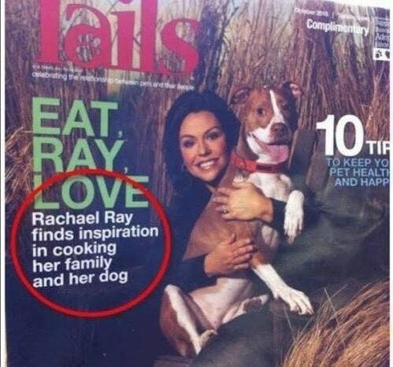

Grammar and Punctuation
Common Styles and Usage, and Common Mistakes
Ansible
Write “Ansible.” Not “Ansible, Inc.” or “AnsibleWorks The only exceptions to this rule are when we’re writing legal or financial statements.
Never use the logotype by itself in body text. Always keep the same font you are using the rest of the sentence.
A company is singular in the US. In other words, Ansible is an “it,” not a “they.”
Capitalization
If it’s not a real product, service, or department at Ansible, don’t capitalize it. Not even if it seems important. Capitalize only the first letter of the first word in headlines.
Colon
A colon is generally used before a list or series: - The Triangle Area consists of three cities: Raleigh, Durham, and Chapel Hill.
But not if the list is a complement or object of an element in the sentence: - Before going on vacation, be sure to (1) set the alarm, (2) cancel the newspaper, and (3) ask a neighbor to collect your mail.
Use a colon after “as follows” and “the following” if the related list comes immediately after: wedge The steps for changing directories are as follows:
Open a terminal.
Type cd…
Use a colon to introduce a bullet list (or dash, or icon/symbol of your choice):
In the Properties dialog box, you’ll find the following entries:
Connection name
Count
Cost per item
Commas
Use serial commas, the comma before the “and” in a series of three or more items:
“Item 1, item 2, and item 3.”
It’s easier to read that way and helps avoid confusion. The primary exception to this you will see is in PR, where it is traditional not to use serial commas because it is often the style of journalists.
Commas are always important, considering the vast difference in meanings of the following two statements.
Let’s eat, Grandma
Let’s eat Grandma.
Correct punctuation could save Grandma’s life.
If that does not convince you, maybe this will:
Contractions
Do not use contractions in Ansible documents.
Em dashes
When possible, use em-dashes with no space on either side. When full em-dashes aren’t available, use double-dashes with no spaces on either side–like this.
A pair of em dashes can be used in place of commas to enhance readability. Note, however, that dashes are always more emphatic than commas.
A pair of em dashes can replace a pair of parentheses. Dashes are considered less formal than parentheses; they are also more intrusive. If you want to draw attention to the parenthetical content, use dashes. If you want to include the parenthetical content more subtly, use parentheses.
Note
When dashes are used in place of parentheses, surrounding punctuation should be omitted. Compare the following examples.
Upon discovering the errors (all 124 of them), the publisher immediately recalled the books.
Upon discovering the errors—all 124 of them—the publisher immediately recalled the books.
When used in place of parentheses at the end of a sentence, only a single dash is used.
After three weeks on set, the cast was fed up with his direction (or, rather, lack of direction).
After three weeks on set, the cast was fed up with his direction—or, rather, lack of direction.
Exclamation points (!)
Do not use them at the end of sentences. An exclamation point can be used when referring to a command, such as the bang (!) command.
Gender References
Do not use gender-specific pronouns in documentation. It is far less awkward to read a sentence that uses “they” and “their” rather than “he/she” and “his/hers.”
It is fine to use “you” when giving instructions and “the user,” “new users,” and so on. in more general explanations.
Never use “one” in place of “you” when writing technical documentation. Using “one” is far too formal.
Never use “we” when writing. “We” aren’t doing anything on the user side. Ansible’s products are doing the work as requested by the user.
Hyphen
The hyphen’s primary function is the formation of certain compound terms. Do not use a hyphen unless it serves a purpose. If a compound adjective cannot be misread or, as with many psychological terms, its meaning is established, a hyphen is not necessary.
Use hyphens to avoid ambiguity or confusion:
a little-used car
a little used-car
cross complaint
cross-complaint
high-school girl
high schoolgirl
fine-tooth comb (most people do not comb their teeth)
third-world war
third world war

In professionally printed material (particularly books, magazines, and newspapers), the hyphen is used to divide words between the end of one line and the beginning of the next. This allows for an evenly aligned right margin without highly variable (and distracting) word spacing.
Lists
Keep the structure of bulleted lists equivalent and consistent. If one bullet is a verb phrase, they should all be verb phrases. If one is a complete sentence, they should all be complete sentences, and so on.
Capitalize the first word of each bullet. Unless it is obvious that it is just a list of items, such as a list of items like: * computer * monitor * keyboard * mouse
When the bulleted list appears within the context of other copy, (unless it’s a straight list like the previous example) add periods, even if the bullets are sentence fragments. Part of the reason behind this is that each bullet is said to complete the original sentence.
In some cases where the bullets are appearing independently, such as in a poster or a homepage promotion, they do not need periods.
When giving instructional steps, use numbered lists instead of bulleted lists.
Months and States
Abbreviate months and states according to AP. Months are only abbreviated if they are used in conjunction with a day. Example: “The President visited in January 1999.” or “The President visited Jan. 12.”
Months: Jan., Feb., March, April, May, June, July, Aug., Sept., Nov., Dec.
States: Ala., Ariz., Ark., Calif., Colo., Conn., Del., Fla., Ga., Ill., Ind., Kan., Ky., La., Md., Mass., Mich., Minn., Miss., Mo., Mont., Neb., Nev., NH, NJ, NM, NY, NC, ND, Okla., Ore., Pa., RI, SC, SD, Tenn., Vt., Va., Wash., W.Va., Wis., Wyo.
Numbers
Numbers between one and nine are written out. 10 and above are numerals. The exception to this is writing “4 million” or “4 GB.” It’s also acceptable to use numerals in tables and charts.
Phone Numbers
Phone number style: 1 (919) 555-0123 x002 and 1 888-GOTTEXT
Quotations (Using Quotation Marks and Writing Quotes)
“Place the punctuation inside the quotes,” the editor said.
Except in rare instances, use only “said” or “says” because anything else just gets in the way of the quote itself, and also tends to editorialize.
- Place the name first right after the quote:
“I like to write first-person because I like to become the character I’m writing,” Wally Lamb said.
- Not:
“I like to write first-person because I like to become the character I’m writing,” said Wally Lamb.
Semicolon
Use a semicolon to separate items in a series if the items contain commas:
Everyday I have coffee, toast, and fruit for breakfast; a salad for lunch; and a peanut butter sandwich, cookies, ice cream, and chocolate cake for dinner.
Use a semicolon before a conjunctive adverb (however, therefore, otherwise, namely, for example, and so on): - I think; therefore, I am.
Spacing after sentences
Use only a single space after a sentence.
Time
Time of day is written as “4 p.m.”